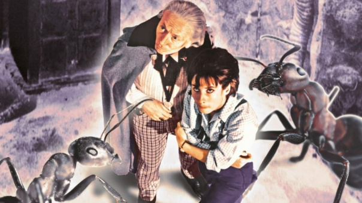
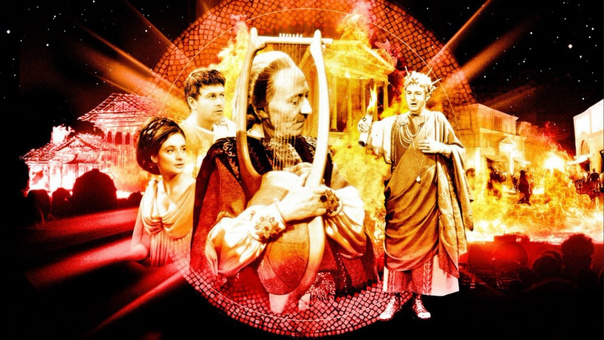

🔽 2 сезон 🔽 (1964-1965) 39 эпизодов, объединённых в 9 серий
Далеки стали первыми возвращающимися монстрами в сериале, появившись в трёх сериях сезона. В финальной истории представлен Питер Баттерворт в роли Монаха - вмешивающийся в историю путешественник во времени из расы Доктора.
 Первая серия со времён самого первого эпизода, происходящая в 1960-х. Сюжет связан с уменьшением всей команды ТАРДИС. СМОТРЕТЬ 1 СЕРИЮ |

Второе появление далеков делает их первыми вернувшимися врагами в сериале. Сюжет происходит в 22 веке. Прощание со Сьюзан. СМОТРЕТЬ 2 СЕРИЮ |

 Первое появление Вики, в конце серии она присоединяется к Доктору, Барбаре и Йену, став первой спутницей из будущего. СМОТРЕТЬ 3 СЕРИЮ |
 Историческая серия с комедийными элементами, происходящая в Римской империи во время правления Нерона. СМОТРЕТЬ 4 СЕРИЮ |

 Первое появление одного из Великих Древних. Первое и единственное появление в сериале меноптр и зарби, рас гигантских насекомых. СМОТРЕТЬ 5 СЕРИЮ |
 Историческая серия, происходящая на территории Палестины во время крестового похода английского короля Ричарда Львиное Сердце. СМОТРЕТЬ 6 СЕРИЮ |
 Первая серия, в сюжете которой важное значение имеют пространственно-временные измерения. Завершается неожиданным появлением далеков. СМОТРЕТЬ 7 СЕРИЮ |